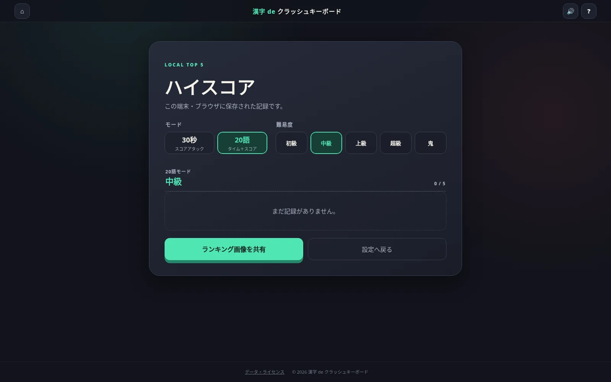

GAME FILE 02 / v0.2.0 / IN DEVELOPMENT
読める語を、壊さず打てるとは限らない。
漢字力・タイピング・キー管理を同時に試す、PC向けサバイバルパズル。
OVERVIEW
漢字 de
クラッシュキーボード
これは、漢字を速く読むだけのタイピングゲームではありません。画面に出る3語の読みを見抜き、現在のキー状態で安全に打ち切れる1語を選ぶ、キーボード破損型のサバイバルパズルです。
判定までに使った文字キーとBackspaceは、正常→黄→赤→破損の順に摩耗します。正解すると、その1語の入力中に一度も使わなかった未破損キーが1段階回復。誤答では回復が起きず、消した文字のキー使用も取り消されません。正確さだけでなく、母音や頻出キーを偏らせない語選びがスコアと生存時間を左右します。
CORE SYSTEM
正解するほど、次の正解が難しくなる
3語すべてが選択肢
カードを選ぶ操作はありません。表示された3語のうち、どれか1語の読みをローマ字で入力してEnter。読める語と、今のキーで打てる語を見比べます。
正解でもキーは傷む
使ったキーは判定ごとに1段階摩耗。同じキーを3判定続けて使うと破損します。Enterだけは毎回必要なため、摩耗対象外です。
破損キーは10秒で復活
破損中のキーは入力できず、Shiftなどによる代替入力もありません。両モードともゲーム内時間10秒で正常へ戻るため、待つ判断が正式な戦術になります。
再抽選は1ゲーム1回
3語すべてが入力不能でも即終了にはならず、最短復活時間が表示されます。その場で待つか、貴重な再抽選を切るかを選べます。
TWO MODES
同じキーボード、異なる生存条件
MODE A
30秒 スコアアタック
30秒の制限時間内に、どれだけ高いスコアを積めるかを競います。ミスをしてもゲームは続きますが、使用キーが摩耗し、スコアも少量減少します。
- 選択した難易度を通して出題
- 語の難易度・読みの長さ・健全率などで加点
- ノークラッシュ状態には追加評価
MODE B
20語 サバイバル
20語の完走を目指すタイム＋スコアモード。ハートは5個で、誤入力のたびに1個減り、5回目のミスでゲームオーバーになります。
- 序盤から終盤へ段階的に難化
- クリア時にタイムボーナスを加算
- ノークラッシュ完走には追加ボーナス
PLAY REPORT / v0.2.0
HPと復活時間を見ながら20語を生き延びる

JUDGEMENT FLOW
1語ごとの判定で起きること
- 01
読みを入力
3語のどれかを一般的なローマ字で入力。
shi / si、chi / tiなど複数表記に対応します。 - 02
使用キーを記録
入力した文字とBackspaceを記録。文字を消しても、そのキーを使った事実は残ります。
- 03
正誤にかかわらず摩耗
判定までに使ったキーが1段階悪化。赤の次は10秒間の破損状態になります。
- 04
正解時だけ未使用キー回復
その語で一度も使わなかった黄・赤のキーが1段階回復。誤答時には回復しません。
LOCAL RECORDS
各モード・各難易度のTOP 5を端末内へ
30秒／20語と5段階の難易度、それぞれの上位5記録をブラウザのローカルストレージへ保存します。世界ランキングやアカウント登録はなく、ゲーム本体も外部APIへ通信しません。
ランキング画面はPNG画像として保存・共有可能。タイムアップまたはHP切れで終了した場合は、最後に表示されていた3語すべてのひらがな読みとローマ字例を結果画面で確認できます。

BEFORE PLAY
プレイ前のご案内
- PC・物理キーボード推奨。アルファベットキーとBackspaceの物理入力そのものをゲーム性に使用します。スマートフォンよりPCブラウザでのプレイをおすすめします。
- 空欄EnterはHPを消費しません。20語モードで空欄のままEnterを押した場合はエラー表示のみで、ハートは減りません。
- 難易度はゲーム独自の目安。初級・中級・上級・超級・鬼の5段階。学校学習段階や漢検の対象漢字範囲を参考にしていますが、漢検協会の監修・認定・公式級判定ではありません。
- 531語・541通りの読みを収録。語彙データとローマ字判定はゲーム内に同梱され、サーバーやデータベースを使わずブラウザだけで動作します。
- 開発中の作品です。語彙、難易度、スコア、バランス、画面構成、保存形式などを予告なく変更する場合があります。
ゲーム仕様は配布ZIP「kanji-de-crash-keyboard v0.2.0」のREADME・CHANGELOG・実装ファイルを確認して記載しています。掲載画面は同ZIPをローカル実行して撮影し、アイコンはZIP内の assets/icon.svg をそのまま使用しています。